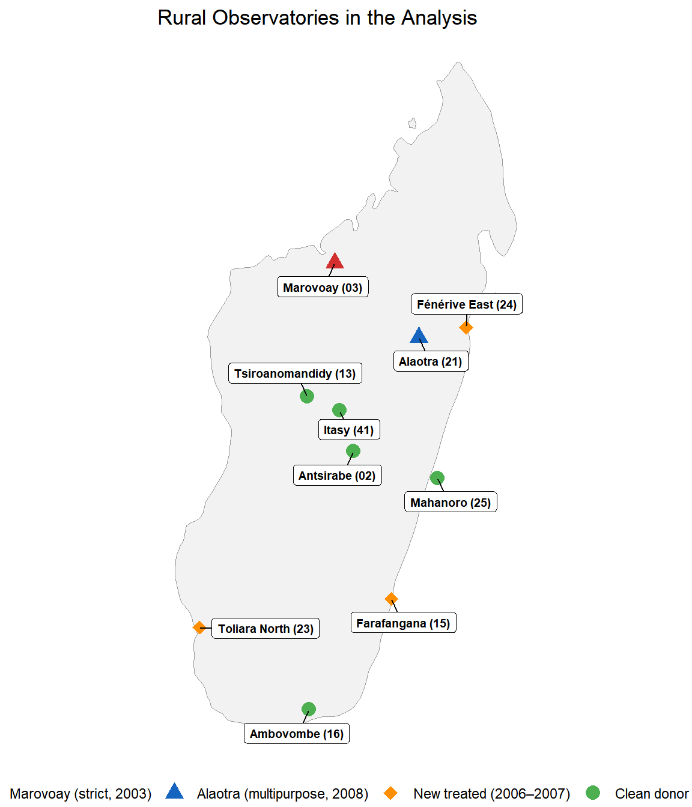
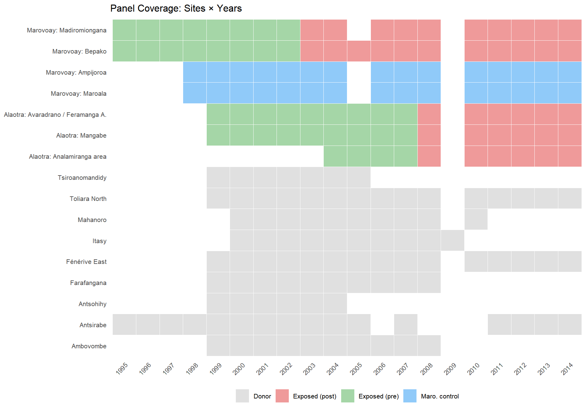
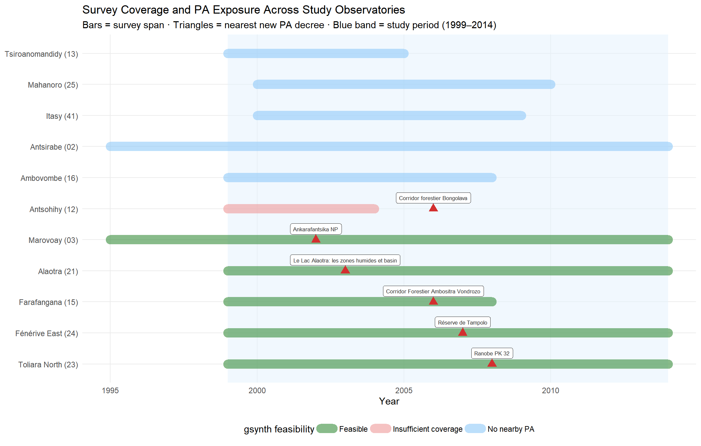
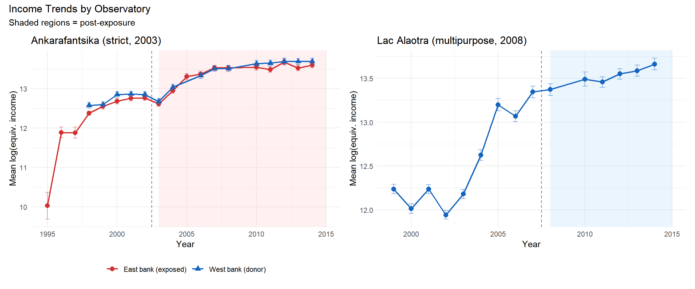

2 Data
Rural Observatory surveys, georeferencing, and variable construction
This chapter summarises the data construction process. The full reproducible workflow — georeferencing, PA overlap analysis, and variable harmonisation — is documented in Appendix A. The underlying survey data are described in a companion data paper (Andrianjafindrainibe et al. 2024); supplementary materials and replication code are available in the associated repository.
3 Survey data
The Rural Observatory System (ROS) surveyed rural households across Madagascar from 1995 to 2015. Many observatories remained active for only a few years. We use 11 observatories that were active by 1999-2000 and had at least 6 years of survey data. This dataset comprises approximately 101,253 household-year observations. Each observatory tracks ~500 households per year in a rotating panel design, with random replacement of attrited households preserving cross-sectional representativeness.

4 Georeferencing
The original survey data lacked systematic georeferencing. Locality names were recorded as free text, with inconsistent spellings across years and languages (Malagasy and French). We linked each observation to official administrative boundaries using the Common Operational Datasets (COD), maintained by OCHA and Madagascar’s BNGRC. The full georeferencing procedure is described in the companion data documentation.
The matching procedure is hierarchical:
- String normalisation: lowercase, remove diacritics and qualifiers (centre, haut, bas), standardise bilingual toponyms, convert Roman to Arabic numerals.
- Fuzzy matching: Jaro-Winkler distance against the COD gazetteer, filtered by observatory-level district membership, with a maximum distance threshold of 0.25.
- Cascading spatial levels: match first at the commune (ADM3) level, then refine to fokontany (ADM4) where possible.
The result is a geocoded correspondence table linking each ROS household identifier (j5) to its P-coded commune and fokontany. This enables spatial overlay with protected area boundaries.
5 Protected area overlaps
Standard PA databases — including the current WDPA and the Vahatra atlas — record only the most recent boundary and designation of each protected area. They do not capture boundary changes (e.g., Ankarafantsika’s 2002 extension roughly doubled the effectively protected area), temporary protection decrees that imposed de facto restrictions years before formal designation, or date errors (many WDPA entries carry incorrect STATUS_YR values).
We instead use a dynamic WDPA for Madagascar — a temporally explicit database that assigns each PA state a precise valid-from / valid-to interval derived from the Madagascar CNLEGIS legal texts database and historical versions of the SAPM geospatial database [INCLUDE REFERENCE DATA PAPER]. This enables us to determine whether an observatory was adjacent to an active PA at any given point during the study period (see Appendix B for full construction details).
For each of the 11 study observatories, we compute the minimum distance from commune centroids (projected to UTM 38S) to the nearest PA boundary active during 1999–2014. All (commune, PA) pairs within 20 km are flagged. Three temporal configurations emerge:
| Configuration | Observatories | Use |
|---|---|---|
| PA predates ROS surveys (no baseline) | e.g., Ranomafana, Andringitra | Excluded |
| PA created during ROS (1999–2014) | Marovoay (2003), Alaotra (2008) | Primary treatment |
| PA created during ROS but later | Farafangana, Toliara, Fénérive (2006–07) | Extension treatment (Ch. 5) |

Figure 5.1 shows that although the ROS was designed for agricultural monitoring, not conservation impact evaluation, some PAs were created relatively near from observatory sites. Gsynth requires sufficient pre-treatment years to learn unit-specific factor loadings, and sufficient post-treatment years for the counterfactual to be informative. We apply a minimum threshold of 4 pre-exposure and 3 post-exposure survey years.
The two primary pairs — Marovoay / Ankarafantsika (strict, IUCN II, 2003 extension) and Alaotra / Lac Alaotra (multipurpose, IUCN V, 2007 temporary decree) — offer the longest pre- and post-exposure windows. Three additional pairs — Farafangana, Toliara North, and Fénérive East — provide shorter but informative extensions (Chapter 5). Observatories without a nearby PA (shown in blue) serve as the donor pool. A systematic spatial audit of donor pool validity is presented in Appendix B.
6 Outcome variable
The primary outcome is log equivalised household income. Construction proceeds as follows:
Total income (
revtot): the sum of current income components: rice revenue (rev_riz), other crop revenue (rev_cu), livestock revenue (revel), fishing revenue (revpeche), principal activity income (revppal), and secondary activity income (revsec). Missing components are set to zero; the total is imputed from available sub-components whenrevtotitself is missing.Equivalisation: using the OECD-modified scale: \(1 + 0.5 \times (\text{additional adults}) + 0.3 \times (\text{children under 14})\), computed from individual-level demographic records (Karvonen et al. 2021).
Winsorisation: at the 1st and 99th percentiles within each year to limit the influence of extreme values.
Log transformation: \(y_{it} = \log(\text{equivalised income}_{it} + 1)\).
Cross-year harmonisation is not trivial: variable names, questionnaire modules, and income definitions changed across survey waves. The full details of these adjustments are in Appendix A.

7 Descriptive statistics
| Sample Descriptive Statistics | ||||||
| Analysis period: 1999–2014 | ||||||
| group | N household-years | Mean income (Ar) | Mean equiv. income | Mean HH size | Mean educ. years (adults) | % literate adult |
|---|---|---|---|---|---|---|
| Marovoay exposed (east) | 3873 | 1,736,175 | 700,533 | 5.0 | 4.4 | 92.0 |
| Marovoay control (west) | 3617 | 2,135,445 | 833,960 | 5.4 | 4.5 | 91.7 |
| Alaotra (exposed) | 7613 | 1,893,377 | 691,554 | 5.1 | 4.5 | 95.6 |
| Donor pool | 48052 | 1,192,493 | 453,894 | 5.5 | 4.3 | 80.1 |